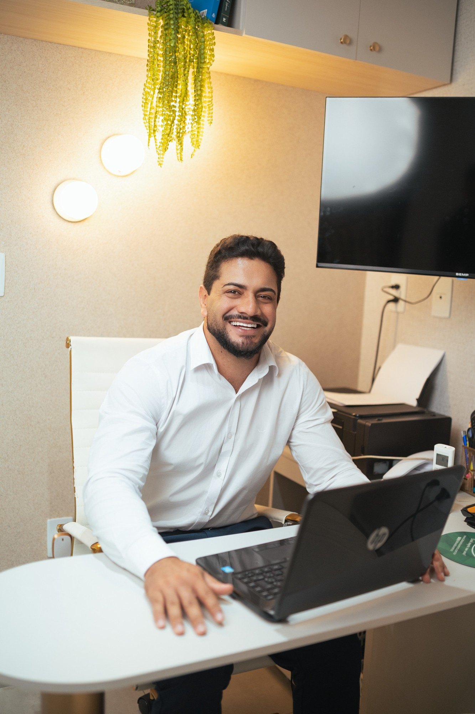
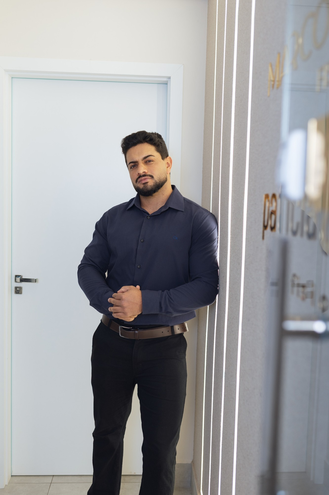

Fisioterapia & Quiropraxia — Manhuaçu, MG
Você com + Saúde — Reabilitação baseada em evidência, cuidado humanizado e resultados reais.
Agendar pelo WhatsApp
"Paciente merece conduta baseada em evidência, não em achismo." — Marcos Quintino, Fisioterapeuta

Sobre o Profissional
Fisioterapeuta & Quiropraxista — CREFITO
Fisioterapeuta e quiropraxista com atuação em Manhuaçu-MG, o Dr. Marcos Quintino se dedica a oferecer um cuidado sério, exclusivo e profissional — onde cada paciente recebe uma conduta personalizada baseada em evidência científica.
Sua missão é clara: proporcionar movimento, saúde, bem-estar e vitalidade por meio de tratamentos que realmente funcionam. Combinando técnicas manuais avançadas com tecnologias modernas, cada sessão é planejada para o seu caso específico.
Atende no Edifício Vitalle, um dos espaços de saúde mais completos de Manhuaçu.
Capacitação Contínua
Atualização constante para oferecer sempre o que há de mais avançado na fisioterapia baseada em evidência.
Especialização
Vitória-ES — Formação avançada em método de reabilitação postural integrado, técnicas de terapia manual e abordagens funcionais.
Congresso Científico
Simpósio Internacional de Fisioterapia — Rio Grande do Norte. Atualização em evidências científicas e novas abordagens terapêuticas.
Técnica Avançada
Formação certificada em agulhamento a seco para tratamento de pontos-gatilho miofasciais e síndromes dolorosas crônicas.
Especialidades
Tratamentos baseados em evidência científica, com abordagem individualizada e foco em resultados reais.
Reabilitação de lesões musculoesqueléticas, dores crônicas, pós-cirúrgico, entorses e tendinites com abordagem baseada em evidência.
Manipulação vertebral e articular para alívio de dores na coluna, cervical, lombar e membros.
Técnica de agulhamento a seco para desativação de pontos-gatilho e alívio de dores miofasciais.
Tratamento conservador para hérnias cervicais e lombares, com foco na redução da pressão discal, alívio da dor irradiada e recuperação da função.
Protocolo individualizado para dor lombar aguda e crônica, combinando terapia manual, exercício terapêutico e orientações posturais para resultado duradouro.
Tratamento da dor cervical e rigidez no pescoço, incluindo dores de cabeça tensionais e dormências nos membros superiores por compressão nervosa.
Galeria
Depoimentos
"Profissional incrível! Me ajudou muito com a minha hérnia de disco. Tratamento personalizado e muito atencioso. Recomendo demais!"
"Dr. Marcos é excelente! Tive uma lesão no ombro e após as sessões voltei a jogar normalmente. Conhecimento técnico impressionante."
"Fui tratada de uma lombalgia crônica que me incomodava há anos. Resultado excelente em poucas sessões. Profissional dedicado e humano."
Pronto para começar?
Entre em contato pelo WhatsApp para agendar sua avaliação. Atendimento no Ed. Vitalle, Manhuaçu-MG.